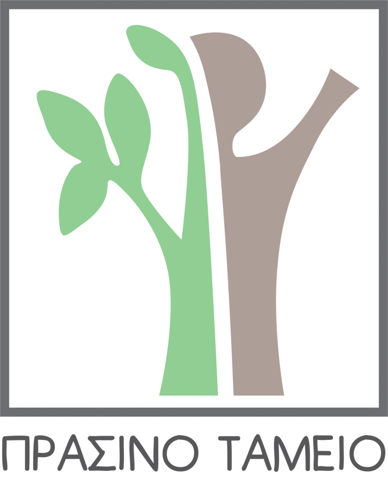
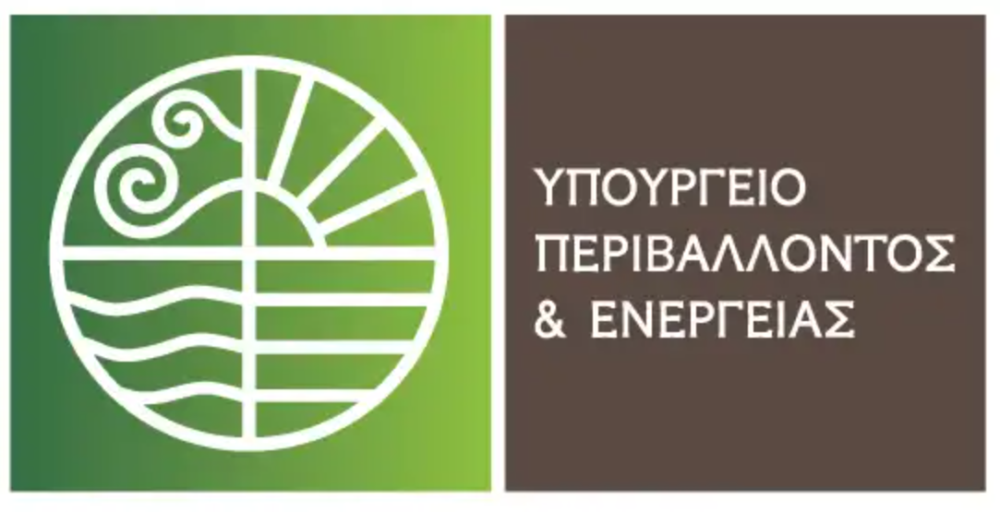

Η Δράση περιλαμβάνει την ανάπτυξη και τροποποίηση των εργαστηριακών
μεθόδων πριν την τελική πιλοτική δοκιμή και έρευνα πεδίου. Οι εργασίες
αυτές κρίνονται απαραίτητες προκειμένου να υπάρξει η απαραίτητη εστίαση
και να ληφθούν υπόψη οι ιδιαιτερότητες της περιοχής εφαρμογής.
Περιλαμβάνονται
- Χημικός, φυσικοχημικός και οικοτοξικολογικός χαρακτηρισμός των
επιλεγμένων Βιοστερεών(ΒΣ): Τα ΒΣ που επιλέχθηκαν για την προαγωγή της ανάπτυξης
των φυτών και τη φυτοπροστασία, θα χαρακτηριστούν περαιτέρω
προκειμένου να ελαχιστοποιηθεί ο περιβαλλοντικός κίνδυνος από τη χρήση
τους. Θα ποσοτικοποιηθούν θρεπτικά στοιχεία τους, καθώς και μέταλλα
τοξικολογικής σημασίας όπως προκρίνεται στην Οδηγία 86/278/EΟΚ.
Ταυτόχρονα, θα ποσοτικοποιηθεί το οικοτοξικολογικό δυναμικό σε
οργανισμούς μη-στόχους σε εκπλύματα των ΒΣ
- Ανάπτυξη της τεχνικής βιο-ενίσχυσης εδαφών: Η καινοτομία της εν λόγω
Δράσης έγκειται στην εφαρμογή της βιο-ενίσχυσης των εδαφών, δηλαδή την
πρόκληση βιο-τσιμεντοποίησης μέσω της αξιοποίησης της μεταβολικής
δραστηριότητας ωφέλιμων, μη-παθογόνων βακτηρίων που εισάγονται σε
αυτά. Στα πλαίσια της Δράσης, θα πραγματοποιηθούν εργαστηριακές δοκιμές
για την εκτίμηση της διηθησιμότητας των βακτηριακών αιωρημάτων και της
διαπερατότητας των βιο-ενισχυμένων εδαφών σε χαλαρή και πυκνή
κατάσταση, σε δύο ποσοστά βιο-τσιμεντοποίησης.

